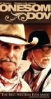

What is this site?
Stephen's Profile
Browser Extension
Stephen Klancher
Recent
Overall
Year Overview
Series
Lists
Lonesome Dove
List contains: 4 items, 0.1 hours.
Seasons:
1
|
Title Search (4+ characters):
Group:
None
Example Group: Me and Stephen
Who's seen it:
No filter
Everyone
No One
Anyone
Anyone Has Not
Who's commented:
No filter
Everyone
No One
Anyone
Anyone Has Not
Netflix:
No Filter
Available for Instant Watch
Netflix Link Known
Netflix Link Unknown
Missing Data:
No Filter
Runtime
Season
Release Year (YYYY) or Decade (YYYx):
Sort:
Normal
Newest Episodes First
Episodes in Order
Recently Watched First
Watched in Order
Newest Releases First
Releases in Order
Stephen Klancher
...has seen 0
...has not seen 0.1 hours
Timeline

Season 1
Leaving (1989)
Airs on 1989-02-05
S1 - E1 of
Lonesome Dove
Stephen Klancher
:
On the Trail (1989)
Airs on 1989-02-06
S1 - E2 of
Lonesome Dove
Stephen Klancher
:
The Plains (1989)
Airs on 1989-02-07
S1 - E3 of
Lonesome Dove
Stephen Klancher
:
Return (1989)
Airs on 1989-02-08
S1 - E4 of
Lonesome Dove
Stephen Klancher
:
Watched an episode not known by IMDb?
Season:
-
Episode:
Date:
Comment: